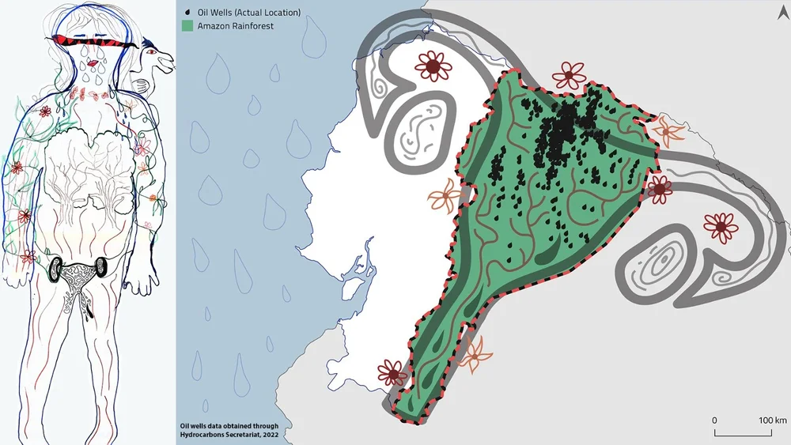
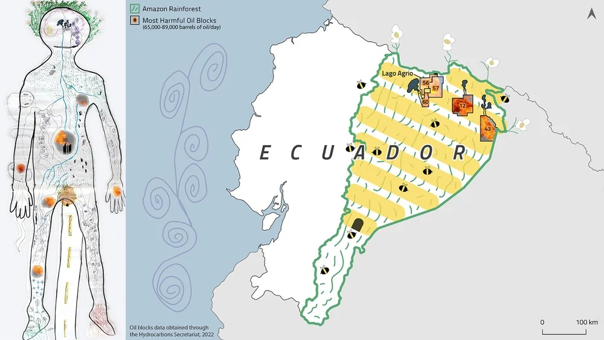

These maps were developed for Belén Noroña as part of her project on cuerpo-territorio (body-territory) maps. Body territory is a framework that comes from Latin American feminist scholarship, and centers connections between the human body and the landscape. Belén conducted workshops with community members in Ecuador where they mapped the environmental harm in their communities onto children’s bodies. For a more in-depth explanation, including soundscape videos in both Spanish and English, please visit Belen's webiste.
My role was to develop three traditional cartographic maps that used stylistic elements from body territory maps. The goal of these maps was to help make connections between traditional and non-representational maps for western and academic audiences, to help them better understand the body territory maps, as well as the geography of Ecuador.
All design elements on the cartographic maps were traced from the body territory maps, and the ideas come from the community members.
In the first map, the Amazon Rain Forest is represented as a uterus, making connections between human reproduction and the reproduction of nature. However, due to the influx of oil companies, both the uterus and the forest are polluted. The small drops of oil in the uterus represent the locations of actual oil wells.
The second map is more of a simple locator map, using elements from the body territory map to represent natural features like forests and mountains. As in the body territory map, cities are represented as blocks, with more blocks indicating higher population, rather than simply a larger dot like in traditional western maps.
In the last map, the rainforest is represented as a beehive. As with the uterus, the beehive represents the productivity of the forest. However, also included in this map are the oil blocks from which the highest amount of oil is extracted. Like in the body territory map, images of fire from actual explosions at oil facilities are displayed in these oil blocks.
